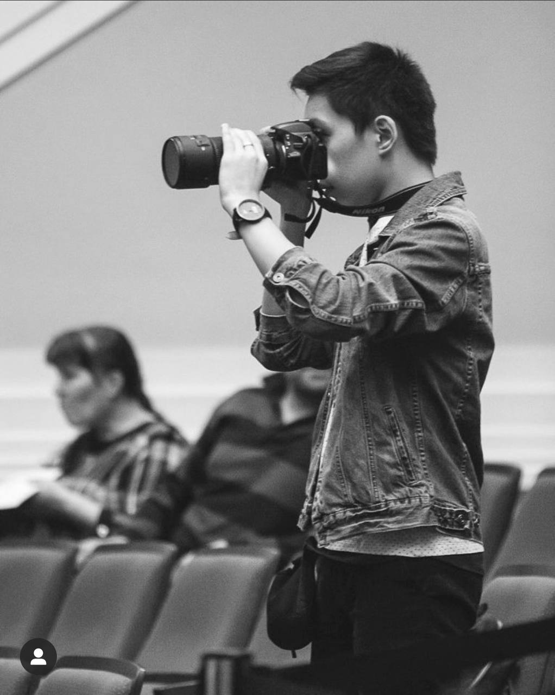

Начал увлекаться ещё в подростковом возрасте, когда учился в школе журналистики Kloop.kg. С тех пор очень нравится фотографировать, особенно живые эмоции людей. Круто запечатлевать приятные и важные моменты в жизни себя и других людей. Чувствуешь себя своего рода летописцем)
Некоторые примеры моих работ:
Для меня чтение книг - это как открытие портала в новый интересный мир с увлекательными героями и неожиданным сюжетом. Я могу с головой уйти в чтение книг и за раз прочитать всю книгу, если она очень интересна. Книги позволяют почувствовать себя главныем героем, который участвует в путешествиях и познает мир.
Мои любимые жанры:
Мои любимые книги:
Увлекаюсь культурой возможного будущего, в котором мир пережил какую-то мировую катастрофу и человечество живет в новом постапокалиптическом мире. В первую очередь речь идёт о фильмах и сериалах. Всё это из-за того, что мне нравится представлять, как бы я вёл себя в мире, где установлены совсем другие правила и условия.
Любимые жанры постапокалипсиса:
Любимые фильмы и сериалы: